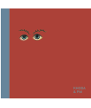

About DPS Patna
Infrastructure
Academic Programme
Faculty
Co-Curricular Programme
Assessments
Transport
Mandatory Information
Admissions
Alumni
Outreach
ContactTakshila & DPS Society Initiative

|
Takshila Value Series is a compendium of seven motivational anthologies in five different languages. All the poems have been meticulously gathered from multiple sources, sequenced chronologically and compiled in their pristine form. The titles take the reader closer to our rich literary heritage. |
||
| Ashwath |
Ashwath is an inspiring collection of poems, songs, shlokas and prayers, compiled from diverse sources. A must read for the entire family, it is a fountain of wisdom, love and peace, not found in usual text books. |
|
|
|
||
| Arête |
Arête is the second gem to be published under the Takshila Value Series. It is a collection of timeless poetry in English written by world renowned poets over a couple of centuries. The poems have been classified into nine broad segments to cover almost the entire gamut of human emotions that touch the hearts of readers of all age groups. A timeline and a very useful appendix have been provided for reference. |
|
|
|
||
| Avigat: Pratham Aakhyank |
Avigat: Pratham Aakhyank,the third publication of Takshila Value Series, is a sumptuous anthology of Hindi poetry reminiscing the literary exuberance and poetic fecundity of our rich past. The title covers poems from the Aadi Kaal to the Riti Kaal. The rare compendium savors the prashathis of Chandvardai, bhakti of Surdas, Sundardas, Mirabai, Tulsidas and Dev, the mysticism of Rahim, the hindavi of Khusro, the unflinching devotion of Malik Muhammad Jaisi and the unconditional love of Vidyapati. |
|
|
|
||
| Avigat: Dwitiya Aakhyank |
Avigat: Dwitiya Aakhyank, is the second volume of Hindi anthology under the Takshila Value Series. It includes poetry from the Aadhunik Kaal. The collection is replete with the nationalism of Bharatendu Hrishchand, Maithlisharan Gupt, Makhanlal Chaturvedi, Ramdhari Singh ‘Dinkar’ and Subhadrakumari Chauhan as well as the romanticism of Suryakant Tripathi ‘Nirala’, Sumitranandan Pant, Mahadevi Verma and Harivanshrai ‘Bachchan’. |
|
|
|
||
| Amizhdham |
Amizhdham is the assortment of ageless poetic compositions from the Tamil literature brought out under the Takshila Value Series. The title includes poetry from the Sangam literature, the Didactic literature, the Devotional literature, the renowned Tamil Epics, the Sittrilakkiyam, the Puraanam and the modern literature. Amizhdham lives up to its name by reflecting the nectar-like sublime emotions elucidated in the works of legendary Tamil poets. |
|
|
|
||
| Ahsaas |
Ahsaas is yet another attempt under the Takshila Value Series to capture the multi-hued literary ethos of India – through some of the most remarkable poetry in the Punjabi literature. All poems in this compendium have been sectioned into the Gurmat Kaav, the Sufi Kaav, the Vaar Kaav, the Kissa Kaav and the Aadhunik Kavita. The title is apt to initiate the readers into the lyrical world of Punjabi verses. |
|
|
|
||
| Ajasram |
Ajasram – Bharatiya Sanskriti Ki Bahti Dhara is a discursive compendium of vital Sanskrit verses from the Vedas, the Puranas, the Upnishads, the Aranya, the Brahmangan Granth, the Vedang, the Bhagwadgita, the Ramayana and the Mahabharata. Ajasram, which literally means ‘continuous flow of flawless expression’, is the latest effort under the Takshila Value Series towards upholding our invaluable heritage through publishing in Indian languages. |
|
|
|
||
| TES Orbit |
TES Orbit is our RNI-registered quarterly that defies the normal definition of a school magazine. Rich in content and with great visual appeal, it focusses on issues that are engaging for readers of all age groups. Its publishing history has been long and eventful, wherein TES Orbit has progressed from a four-page monochrome production to being a full-fledged, 60 page, multicolour news stand magazine full of informative articles. Each of its issues is themed on a topic of direct relevance to the society in general and young people in particular. It also has a rich reservoir of features on other topics and invites literary and illustrative contributions from students, parents, teachers, educationists, journalists, authors, cartoonists, activists, and the like– all of whom are featured on a single platform. There’s also a supplementary pull-out, primarily meant to feature articles and pictures created by students. |
|
| Pluto | Pluto, a bimonthly magazine in Hindi meant for readers aged 5-8, is an attempt of Takshila Publication to create quality children’s literature that is specific to Indian context. It aims to kindle the spark of enquiry and love for reading amongst the young ones. | |
| Cycle – Bachchon Ka Dumahiya | Cycle – Bachchon Ka Dumahiya, is a Hindi bimonthly magazine which targets readers in the age group of 10 to 14 years, intending to provide them with ingenious, creative and progressive reading material which integrates concepts of science, arts cum literature. It features ideas pivotal to the learning curve of children from all socio-economic and cultural backgrounds. | |
|
|
||
| Kathaavali |
Kathaavali Series, brought out by Takshila Publication in 2013, is a seven volume Hindi-translated collection of famous short stories from the various languages of the world. Every book is brimming with stories from regional Indian languages as well as foreign languages. Furthermore, special impetus has been given on keeping numerous folk tales from India and abroad so as to enhance the reading variety for young people. It is enthralling to find legends like Premchand, Mithleshwar, Feneshwaran Renu sharing print space with the likes of Chekhov, Pushkin, Lu shun and the like. |
|
|
|
||
| Kaleidoscope Series is a collection of seven books in Hindi that amalgamate scientific, literary and cultural aspects of fascinating topics and present them through witty narrative which is paired with captivating illustrations and is apt for ages 9 and above,. | ||
| Farr Furr |
Farr Furr, the first volume of Kaleidoscope Series, peeps into the vibrant world of feathery creatures and introduces readers to the similarities as well the uniqueness of ten well-recognized birds, viz. sparrow, weaverbird, woodpecker, Indian roller, crow, vulture, kiwi, ostrich, stork and owl. |
|
| Keet Patang | Keet Patang, the second volume of Kaleidoscope Series, hovers over the largest class of creatures on the planet and sweeps around ten interesting insects—viz. lice, demodex, fruit fly, moth, silver fish, termites, wasp, cricket, lady bug and glowworm—enumerating the way they live and affect the humankind. | |
| Jar Funagi | Jar Funagi, the third volume of Kaleidoscope Series, talks about the diverse modifications of plant parts and the multitude uses to which these are put. The book enumerates the anatomy and utility of twelve plants—cassava, beetroot, sugarcane, yam, tea, bay leaf, clove, butter tree, custard apple, watermelon, water chestnut and groundnut. | |
| Tann-Mann | The first title in the Kaleidoscope Series, Tann-Mann is a science trivia book in Hindi. This intricately illustrated title delves into twelve vitally interesting physiological processes of the human body—salivating, yawning, hiccups, burps, sneezing, eye twitching, acne, sweating, shivers, eczema, cracks and snoring—explaining their significance in biology, literature and culture. | |
| Resha Resha | Resha Resha, the fifth volume of Kaleidoscope Series, traverses the journey of natural fibers from their growth on plant through the processing they undergo to be fashioned into fabric. | |
| Pushp Kram |  |
Pushp Kram, the sixth volume of Kaleidoscope Series, takes a closer look at the arrangement in which flowers grow on plants. Through anecdotes and analogies, it not just simplifies the concepts of racemose, cymose, compound and special types of inflorescences, but also introduces readers to the complexities of mustard, Palaash, maize, yam, gulmohar, marigold, euphorbia and ficus. |
| Mal Nirmal |  |
Mal Nirmal, the seventh volume of Kaleidoscope Series, dwells on the diverse kind of excreta found in the animal world along with the numerous uses to which it is put. The focus is on eight creatures—bat, chicken, snake, fish, hippopotamus, elephant, panda, penguin—and the manner in which humans utilize their refuse. |
| Ektara Bole | Ektara Bole is a travel memoir in Hindi for young readers that features ten of the greatest travellers who visited India in the last two thousand years. This delightful historic non-fiction encapsulates their background, life story, travel route, and excerpts from as well as comments on their writings | |
| Eye Spy Indian Art |  | Eye Spy Indian Art, an engaging activity book meant to introduce the Indian Modern Art to readers in the age group 11-14, has been conceptualized by Ritu Khoda and Vanita Pai, and designed by Ishan Khosla. It traces the history of art in India from pre-independence, features prominent artists who led the various art movements, describe the technique used in their artwork, and leave an exercise for the reader – all of which enable the reader to create a collection of their own artwork as well as construct a Timeline of the Indian Modern Art Movement. |
| Cobalt Blue | Cobalt Blue is a compilation of twenty-seven short stories and forty-six illustrations conceived and created by select students from Delhi Public School, Patna, Pune, Ludhiana and Coimbatore. The stories are as diverse and interesting as the age-group and locale of the authors. The tales appeal to all tastes and ages. Cobalt Blue is also an icon to mark how we have taken learning beyond books—by publishing books! | |
| Narendrapur: Bharat Ki Ganwai Gandh | Narendrapur: Bharat Ki Ganwai Gandh, is a series of Hindi short stories collection that are inspired from intensive immersion of eminent writers during ‘Katha Shivir’, an annual 5-day residency conducted in and around Narendrapur village of Siwan district in Bihar. Three volumes of the anthology have been published till date, which include, amongst others, writings of wordsmiths like Mamta Kalia, Usha Kiran Khan, Priyamvadd, Vandana Rag, Ranjan Kumar Singh, and Pratyaksha. | |
| Bihar Ki Sangeet Parampara | Bihar Ki Sangeet Parampara is the treasure trove of the invaluable memoirs of Padmshree Gajendra Narayan Singh from the world of Art. | |
| Apni Maati | Apni Maati brings forth the affluent cultural saga of Bihar through the art illustrations created by well-known sculptor, Shyam Sharma. | |
| Chalte-Chalte | Chalte-Chalte is a compendium of thirty exquisite drawings and insightful musings from artist Shyam Sharma. | |